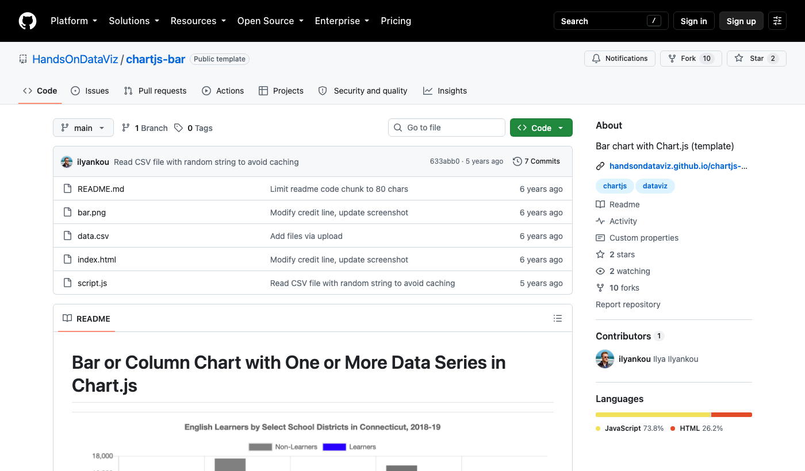

① 流程拆解：把一項工作拆成步驟，找出真正要改善的那一步。
② 版本控制：理解 GitHub 的用途，以及 AI 時代為什麼需要「能回頭的修改紀錄」。
③ 資源搜尋與選擇：把需求變成搜尋詞，找到資源後判斷適不適合組織。
| 術語 | 白話解釋 |
|---|---|
| Repository（repo） | 一個專案放檔案與修改紀錄的地方，像一個會記住所有修改的資料夾。 |
| README | 專案的說明書與入口。打開一個專案，先讀它。 |
| LICENSE | 授權：說明可以怎麼使用、修改或分享。沒有 LICENSE ＝ 作者保留權利，不能直接拿來改用。 |
| Issue | 記錄問題、需求或待辦事項的討論串。看得出專案有沒有人在回應。 |
| Commit | 存檔：存下目前的狀態，並寫一句「這次改了什麼」。 |
| History／Commits | 存檔清單：每一次修改的時間、修改的人與說明。看最後更新時間就在這裡。 |
| Diff | 比較兩個版本的差異：紅色是刪掉的、綠色是新增的。 |
| Revert | 讀取舊存檔：回到改壞之前的版本。 |
| GitHub Pages | 把 repo 裡的檔案發布成一般人可以瀏覽的網站。 |
| Code 按鈕／Download ZIP | 取得專案檔案的入口：按綠色 Code 按鈕，選 Download ZIP 下載壓縮檔。 |
| Star | 使用者的「收藏」。數量多代表受關注，不代表適合你、也不代表安全。 |

① ② ③ ④ ⑤github.com/HandsOnDataViz/chartjs-bar（2026-10-01 擷取）
原始說法：「每次活動結束都要重新整理報名資料，很花時間。」拆開來看：
| # | 步驟 | 誰做 | 用什麼工具 | 經手哪些資料（個資打★） | 耗時 | 卡在哪 | 解法方向 |
|---|---|---|---|---|---|---|---|
| 1 | 建立報名表單 | 承辦人 | Google 表單 | — | 30 分 | 每次重做欄位 | 範：複製上次的表單當範本 |
| 2 | 匯出報名資料 | 承辦人 | Google 試算表 | ★ 姓名、電話、Email | 10 分 | — | —：不用動 |
| 3 | 清理欄位、去除重複 | 承辦人 | Excel | ★ 同上 | 60 分 | 格式不一、重複報名 | AI：請 AI 協助寫公式（只給欄位名稱與假資料） |
| 4 | 對照簽到、計算出席 | 志工 | 紙本簽到表 → Excel | ★ 同上 | 60 分 | 手抄錯誤 | 流：先改流程，改用表單或 QR 簽到 |
| 5 | 製作統計圖表 | 承辦人 | Excel | 去識別的統計數字 | 45 分 | 每次重畫圖 | 找：上 GitHub 找圖表範本 |
| 6 | 撰寫成果報告 | 主管 | Word | 統計結果 | 60 分 | 「最終版_v3」版本混亂 | 版：建立版本管理的習慣 |
| 承辦人 | 1 建立表單 | 2 匯出資料 ★ | 3 清理欄位 ★ | 5 製作圖表 | ||
|---|---|---|---|---|---|---|
| 志工 | 4 計算出席 ★ | |||||
| 主管 | 6 成果報告 |
泳道圖怎麼畫：每個角色一條橫向泳道，步驟依時間由左往右放進負責人的泳道。工作換泳道的地方就是交接點，也最容易出錯。
紅框＝卡關，★＝經手個資。
| # | 步驟 | 誰做 | 用什麼工具 | 經手哪些資料（個資打★） | 耗時 | 卡在哪 | 解法方向 |
|---|---|---|---|---|---|---|---|
| 1 | |||||||
| 2 | |||||||
| 3 | |||||||
| 4 | |||||||
| 5 | |||||||
| 6 |
版本控制要解決三件事：檔名地獄（哪份才是最終版？）、AI 改壞了回不去、交接時沒人知道誰改了什麼。
| GitHub 用語 | 遊戲比喻 | 白話說明 |
|---|---|---|
| Commit | 存檔 | 存下目前狀態，並寫一句「這次改了什麼」 |
| History | 存檔清單 | 依時間列出每一次存檔與說明 |
| Diff | 比較兩個存檔 | 紅色是刪掉的、綠色是新增的 |
| Revert | 讀取舊存檔 | 回到改壞之前的版本 |
一次存檔 ＝ 一句說明＋看得見的修改內容。
✓「修正出席率公式，排除重複報名」
✓「成果報告新增 9 月活動照片說明」
✗「更新」 ✗「改一下」 ✗「final」
Google 文件的「版本記錄」就是一種版本控制。GitHub 多了三件事：每次都寫說明、逐行比較差異、多人改完再合併。
AI 一次可能改幾十行，肉眼看不出來；有版本紀錄，就能看清楚，也能回頭。
適合放的是：程式碼、範本、公開文件、去識別資料。
Repository 放的是檔案與修改紀錄；用 GitHub Pages 才會變成大家看得到的網站。範例：github.com/HandsOnDataViz/leaflet-maps-with-google-sheets（檔案）與 handsondataviz.github.io/leaflet-maps-with-google-sheets（網站）。
| 搜尋詞（2026-10-01 實測） | 結果 |
|---|---|
event registration report template | 0 筆：需求句太具體 |
nonprofit volunteer spreadsheet template | 0 筆 |
活動 報名 | 多是報名系統，類型不符 |
google sheets template、chart template csv | 出現可用範本 |
常用資源類型詞：template 範本 example 範例 dataset 資料集 toolkit 工具包 awesome 精選清單
1. 我要替流程拆解表的第 ＿＿ 步找資源。希望找到哪一類？
文件範本公開資料小工具完整系統實作案例尚未確定
2. 可以搜尋的關鍵字（資源類型＋工具名稱）
3. 篩選搜尋結果時，我會看：
最後更新時間有沒有 LICENSEREADME 清不清楚有沒有截圖或 demo
Star 數只供參考。
4. 這項工作裡，有沒有會一直被修改的檔案或程式？要怎麼保留修改紀錄？
5. 下一步判斷
| 選項 | 什麼時候選它 |
|---|---|
| 先改流程 | 卡關的地方，改步驟或交接方式就能解決 |
| 自行試用低風險範例 | 有授權、只用假資料、壞了也不影響工作 |
| 找技術夥伴評估 | 涉及個資、需要架站或主機、要長期維護 |
| 暫不導入 | 目前問題不大，或組織還沒有人力承接 |
課堂上：對照下方 chartjs-bar 的資訊填寫。課後：拿你自己找到的資源再填一次。
檔案：README.md bar.png data.csv index.html script.js ｜ LICENSE：找不到 ｜ 最後一次修改：2021-04
README 摘錄（2026-10-01 查閱）
專案名稱與連結
這是什麼類型的資源？
文件範本公開資料程式工具網站案例完整系統
README 說它能解決什麼問題？
使用前需要什麼條件？（技能、設備、帳號、主機）
有沒有找到授權資訊？寫了什麼？
看得出更新與維護狀況嗎？最後更新是什麼時候？
還有哪些資訊不清楚？
index.html，圖表會是空白，因為它要透過網頁伺服器讀取 data.csv。data.csv 本身用 Excel 就能打開。
講師會把下面這份 README 交給 AI 判讀。請你先自己讀，再對照 AI 的回答：
GitHub 右側欄的授權標籤：MIT License
README 摘錄（2026-10-01 查閱）
1. 這是哪一類資源？
2. 側欄寫 MIT，README 寫 CC BY-NC-ND 4.0。哪個適用於書的內容？這代表什麼限制？
3. 如果遇到問題，作者會提供技術支援嗎？
4. AI 的回答中，哪一句是推測？
找到一個看起來合用的資源後，逐項問自己。任何一項答不出來，就是下一步要問清楚的地方。
| 評估項目 | 要問的問題 | 範例：CiviCRM 的線索 | 我們的答案 |
|---|---|---|---|
| 適用性 | 它解決的真的是我們流程拆解表上的那一步嗎？ | 專為倡議與非營利組織設計 | |
| 資料安全 | 需要輸入或存放哪些資料？存在哪？誰可以存取？ | 會員、捐款人個資存放在自架主機 | |
| 授權 | 有 LICENSE 嗎？能怎麼使用、修改或分享？ | AGPL-3.0：修改版若透過網路讓別人使用，須向這些使用者提供原始碼（實際要求請技術或法務人員確認） | |
| 操作門檻 | 現有人員能否使用？需要安裝或架站嗎？ | 要架成 PHP 網站，或裝進 WordPress／Drupal | |
| 維護責任 | 誰負責更新、備份、排錯與交接？專案還有人在更新嗎？ | 專案持續更新；但組織端誰來升級？ | |
| 總成本 | 除了取得資源，還有主機、導入、訓練、維護成本嗎？ | README 列有付費支援廠商 |
為什麼不要 AI 直接推薦連結？因為 AI 可能編造不存在的專案。關鍵字請自己拿去搜尋，搜到的專案再點開確認。
修改前先存檔（Commit）；改完先看差異（Diff），確認沒問題再保留。
回到組織後，照著下面的步驟自己做一次。預計 30–60 分鐘。
找一位同事，一起把第 4 頁的流程拆解表填完。特別標出：卡關的步驟、經手個資的步驟（★）。
只挑解法方向標「找」的那一步，用「資源類型＋工具名稱」寫出 2–3 組關鍵字。可以用第 10 頁的提示詞 B 請 AI 協助。
github.com，在最上方的搜尋框輸入關鍵字，按 Enter。點開一個看起來合適的結果，填第 7 頁的 Repository 閱讀卡。重點看：README、LICENSE、最後更新時間。
.csv、.xlsx、.docx）。index.html 可能是空白的，這很正常，看 README 有沒有線上 demo。用第 9 頁的資源選擇檢查表逐項檢查，然後在第 6 頁勾選下一步。
| Repository | 授權 | 課堂用途 |
|---|---|---|
github.com/HandsOnDataViz/chartjs-bar | 無 LICENSE | 主案例：CSV 換資料就能產生長條圖；示範授權、更新與下載後打不開的問題 |
github.com/HandsOnDataViz/book | 側欄 MIT；書本內容 CC BY-NC-ND 4.0 | AI 判讀練習；寫給非程式背景者的資料視覺化開放書，線上閱讀：handsondataviz.org |
github.com/HandsOnDataViz/chartjs-templates | 無 LICENSE | 已拆分成獨立 repo 的舊版本：從 README 看出「這裡不是最新版」 |
github.com/HandsOnDataViz/leaflet-maps-with-google-sheets | MIT | Repository 檔案與 GitHub Pages 網站的差異 |
github.com/civicrm/civicrm-core | AGPL-3.0 | 對照案例：成熟的非營利 CRM，導入條件的評估 |
event registration report template（0 筆） nonprofit volunteer spreadsheet template（0 筆） 活動 報名 google sheets template chart template csv
公民組織數位工作流程與開源工具評估
今天的流程拆解表、搜尋方法與判斷表，都可以帶回組織自行使用。如果你們已經找到可能的資源，卻卡在流程整理、工具選擇、網站串接或後續維護，歡迎帶著一項具體工作流程與我們討論。我們會先釐清問題，再判斷是否真的需要建置新工具。
＿＿＿＿＿＿（公司名稱）
＿＿＿＿＿＿（網站／Email／電話）